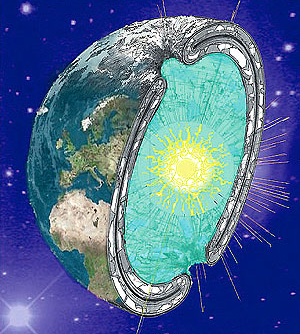

The Hollow Earth Theory has been around for a long time. While the first concepts were crude, this so-called 'crazy' idea has slowly been embraced as viable alternative to the false solid-Earth model and will soon be recognized as the actual truth. With today's technology, many of our findings point towards a hollow structure as the only method to explain the following scientific findings:
The HEPCATs organization is working to capture the technology used by the aliens and inner earth societies so we can use it for needed things like energy independence, more efficient means of transportation, and better wifi reception, and microwave popcorn that tastes more buttery.
This is because there is all kinds of magnetic distortion near the opening because the magnetic lines of force pass through the inner rim of the doughnut opening. So as aircraft approach the opening, their instruments of navegation typically go haywire. At this point, it is assumed that the aircraft is basically over the pole. With the navegational instruments haywire, how is anyone going to know exactly where they are? And why would any pilot stick around to find out?
The North Pole and the South Pole do not exist. In their place are polar openings that lead into Inner Earth anyone en route to a polar opening is eventually stopped by Outer Earth guardsmen. This is because the funnel shape of the opening would give the illusion, to a person travelling across along the bowel-like side, of having come straight across the neck of the opening. Such a traveler would have experienced exaggerated sledding speeds as the curvature flattened out and angled inwards, and any movement would have given greater Northward progress across the top of the world. Along the inner rim the angle of the curvature would have tilted inwards. Thus, looking straight above, the person would seem to be looking at that point which is straight over the middle of the doughnut opening, but from an angle, off to the side, and without realizing that any inward angle is even involved! Thus, the person would have crossed, roundabout, to one side of the opening while thinking that he/she had made progress straight across.
One theory about the 'grey' type of aliens is that they are surviving members of the dinosaur era. The Alpha-Draconians saw the meteor that was going to hit the earth and warned the dinosaurs about their coming extension. For survival, they helped the dinosaurs build underground bases (much like current bomb-shelters for governments) and they travelled deep inside the earth, which is hollow rather than molten. The "aliens", which are really surviving dinosaurs, then bred humans like "dogs" to set us to work for them.
